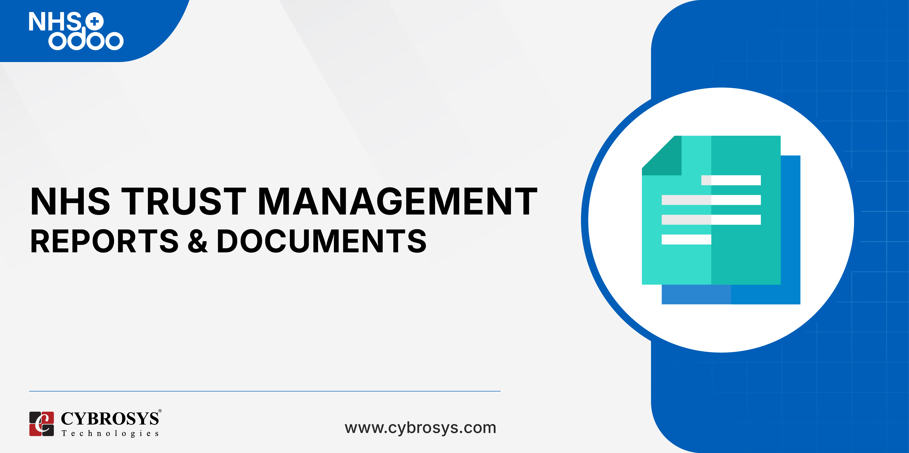

NHS Establishment Register
The funded-post register — funded vs in-post vs vacant FTE, by team,
band and cost centre — and the foundation of the NHS Workforce vertical.

Why an Establishment Register?
The establishment is the budgeted shape of the workforce, defined in positions, not people.
NHS Establishment Register tracks funded posts against staff actually in post, exposing the vacancy gap that
drives recruitment, safe staffing and pay-budget planning — without holding a single personal HR record.
Key Features
- Organisational hierarchy — Directorate → Division → Department → Team,
with breadcrumb naming, managers and cost-centre links.
- Funded-post register — job title, Agenda for Change band, contracted hours/FTE, staff
group, cost centre, contract type and effective dates.
- Funded vs in-post vs vacant FTE and headcount, computed and rolled up at every level of
the hierarchy.
- Vacancy register — the live list of unfilled funded posts, with vacancy-rate and
time-vacant reporting, and a frozen-post flag kept separate from true vacancies.
- Establishment change control — create / delete / increase / decrease / re-band /
transfer requests with workforce + finance approval and an indicative cost impact shown before sign-off.
- Agenda for Change reference data — Bands 1-9 with editable indicative pay values and
pay-cost roll-ups for budget planning, plus support for Medical / Non-AfC posts.
- Dashboards & reporting — establishment summary, by staff group, by band, vacancy
hotspots, indicative pay budget, and PDF establishment / vacancy register reports.
- Import & onboarding — standard Odoo import templates for the org hierarchy and posts,
plus bulk inline editing of funded/in-post FTE.
- Security — Workforce User (read), Workforce Officer (maintain) and Workforce Manager
(approve & configure) groups, with company-scoped record rules and archive-only history.
- A stable post API for the Training, Recruitment, Staff Bank and Rostering modules that
build on this foundation.
The Core Concept
| Concept |
Meaning |
| Funded establishment |
The posts the organisation is budgeted for (e.g. Ward 7 funded for 18.5 FTE). |
| In-post |
The portion of funded posts actually filled by staff right now (e.g. 16.5 FTE in post). |
| Vacancy |
The gap: funded − in-post (e.g. 2.0 FTE vacant) — the feed for recruitment. |
Support
Developed and maintained by Cybrosys Techno Solutions.
For customisation or support, contact odoo@cybrosys.com.